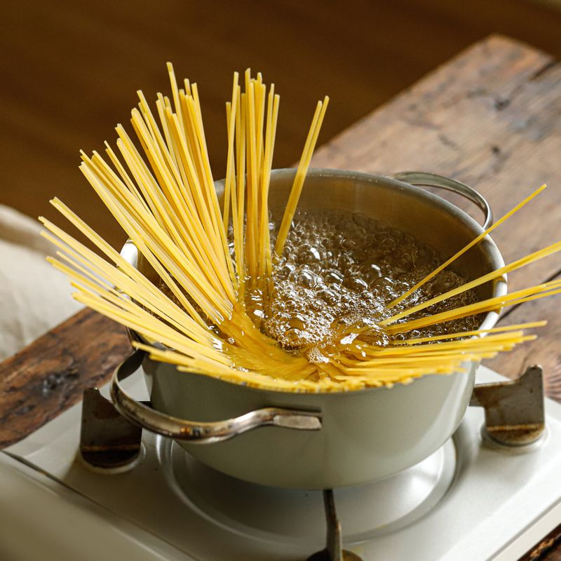
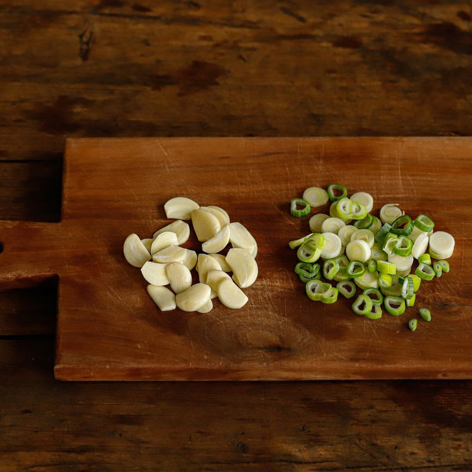
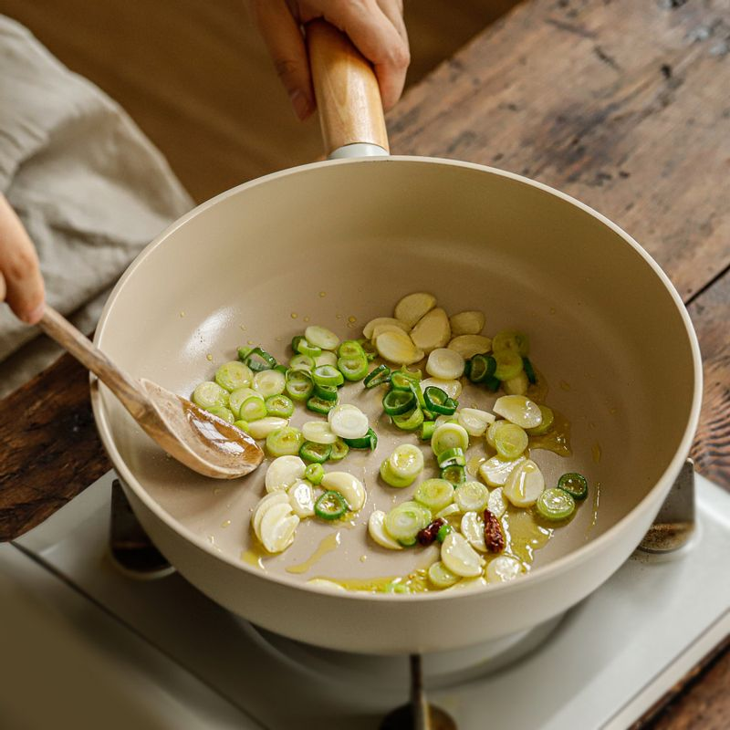
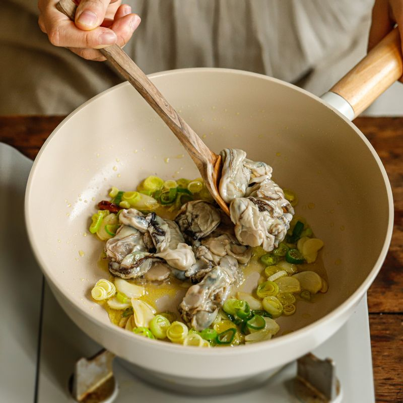
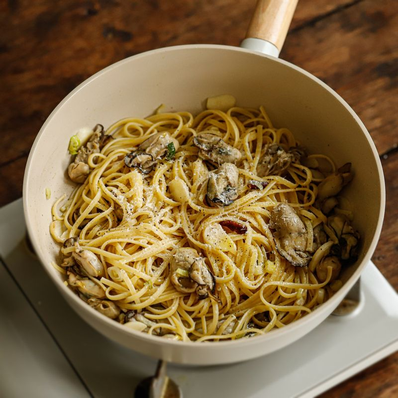
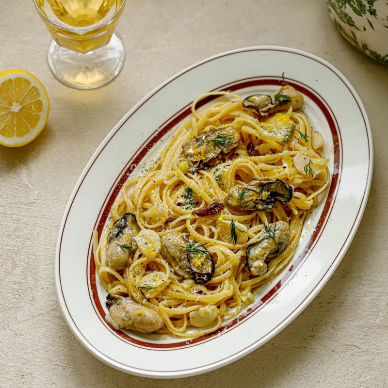

끓는 물에 소금 약간과 면을 넣고 8분 정도 삶아낸 후 채반에 덜어주세요.
면수는 1컵 정도 덜어주세요.
 마늘은 편 썰고 대파는 송송 썰어주세요.
 팬에 올리브오일을 두르고 편썬 마늘과 대파, 페퍼론치노를 넣고 약불에서 볶아주세요.

굴을 넣고 볶다가 화이트와인을 넣고 강불에서 빠르게 볶아주세요.
면을 넣고 면수를 조금씩 넣고 섞어 농도를 맞춰주세요.
 파마산 치즈를 갈아 넣고 후추를 뿌려주세요.
 접시에 파스타를 담고 딜과 레몬 제스트, 레몬즙을 뿌려 맛있게 즐겨주세요.